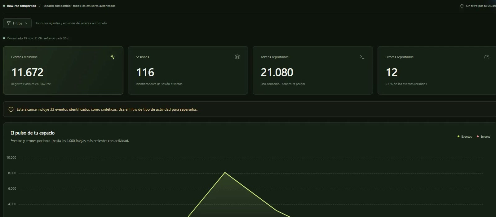
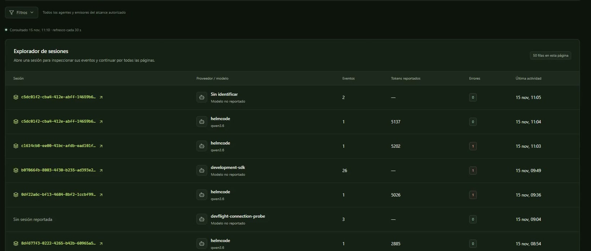
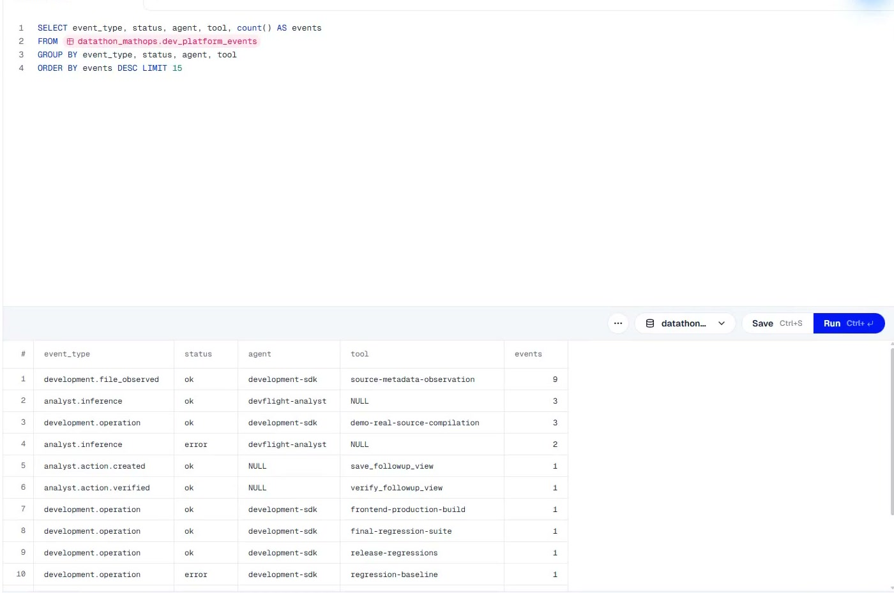
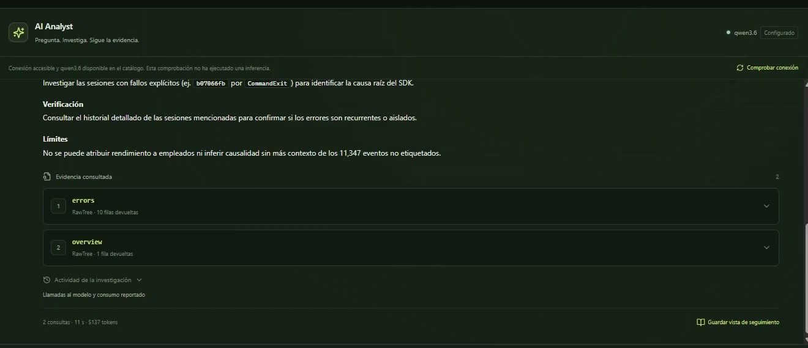
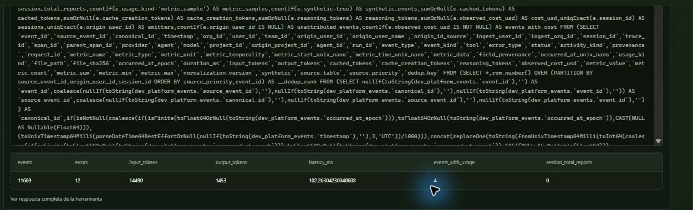
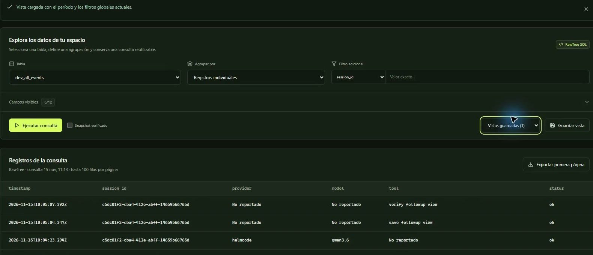

Tus agentes.
Una visión completa.
DevFlight convierte actividad dispersa en una investigación que podemos comprobar.

Un fallo deja pistas en demasiados sitios
Sesiones, herramientas y errores quedan repartidos entre agentes. Seguir una ejecución exige reconstruir su historia.

La pregunta útil: ¿qué ocurrió y en qué sesión?
Una cadena que se puede auditar
Los agentes emiten eventos de sesiones y herramientas.
Conserva el historial de la fuente compartida.
SQL y AI Analyst examinan los mismos datos.
Una vista guardada permite seguir el hallazgo.
De cada afirmación podemos volver al evento.
Una vista de todos los emisores autorizados
Instantánea del 15 nov 2026. Incluye 33 eventos marcados como sintéticos.
La telemetría responde a SQL
SELECT event_type, status,
agent, tool,
count() AS events
FROM datathon_mathops.
dev_platform_events
GROUP BY event_type,
status, agent, tool
ORDER BY events DESC
LIMIT 15

Consulta de lectura ejecutada sobre la tabla real del proyecto. La captura muestra filas devueltas.
AI Analyst consulta y deja evidencia
El analista eligió dos consultas a RawTree, examinó errores y actividad, y propuso verificar las sesiones afectadas.
12 errores entre 11.669 eventos en el momento de esa investigación.

Análisis anterior, guardado. La recomendación no prueba por sí sola una causa raíz.
De la respuesta a una vista verificada


La vista se guardó y se consultó. Explorer muestra save_followup_view y verify_followup_view con estado ok.
Datos reales.
Consultas visibles.
Seguimiento comprobado.
La demo muestra la cadena completa, desde la actividad del agente hasta una acción registrada en RawTree.
El proyecto Qualcomm aportó actividad complementaria para ampliar la muestra de datos. Esta presentación se centra en DevFlight.
Demostración completa: DEMO_FINAL.mp4